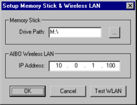
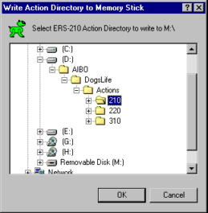

11.0 Upload Actions to AIBO
Skitter
can use the wireless LAN (if
installed) to upload action databases to AIBO ERS 210/220 programmable
memory sticks. If you don't
have a WLAN, or use an ERS-310, you must use a memstick
reader.
For the ERS-7, Skitter supports both programmable
memsticks -and-
AiboMind dance customization.
11.1 Setup
Memory Stick & Wireless LAN
To configure Skitter, from the File Menu select "Setup Memstick
& WLAN". Type in the drive path to your memstick
reader.
You should setup your AIBO WLAN
before attempting a connection with Skitter. Find AIBO's
four digit IP address, and type it in. Turn on AIBO,
and after "stretching", use the "Test WLAN" button (see image
right) to verify Skitter sees AIBO.
|

|
11.2 Upload Actions
with WLAN
Save any open performance files.
Turn on AIBO, and after "stretching", click the toolbar "Upload"
button. A window appears for selecting an action directory (see
right). If you don't have any performance files open,
Skitter first prompts for the AIBO model type.
IMPORTANT! If
the AIBO type doesn't match your AIBO, click Cancel. Close all
open performances, click the toolbar "Upload" button
again. When Skitter prompts for AIBO type select the correct
model.
Click OK once you make a selection.
|
|
Skitter compiles the
action directory, connects to AIBO, waits for it to
initialize, and uploads the action database.
You must reboot AIBO before the new action database takes effect.
|
|
11.3 Write Actions to
Memstick
People
without a wireless LAN, or anyone using an ERS-310, must write action
files using a memstick reader. Save any open performance
files. Insert
a programmable memory stick into your reader, and click the toolbar "Write"
button.
A window appears for selecting an action directory (see right).
If you don't have any performance files open, Skitter prompts for the
AIBO model type.
IMPORTANT! If
the AIBO type doesn't match your AIBO, click Cancel. Close all
open performances, click the toolbar "Write" button again.
When Skitter prompts for AIBO type select the correct model.
Click OK once you make a selection.
|

|
Skitter compiles the action
directory, and writes the results to your memory stick.
|
 |
11.4 Write Actions to
AiboMind
ERS-7 owners must write action
files to AiboMind using a memstick reader. Save any open
performance
files. Insert
a programmable memory stick into your reader, and click the toolbar "Write"
button.
A window appears for selecting an action directory (see right).
If you don't have any performance files open, Skitter prompts for the
AIBO model type.
IMPORTANT! If
the AIBO type doesn't match ERS-7 (see right), click Cancel.
Close all
open performances, click the toolbar "Write" button again.
When Skitter prompts for AIBO type select the correct model.
Click OK once you make a selection. |
 |
Once Skitter verifies your
AiboMind memory stick is present, it starts SAMM for you.
The SAMM utility is designed for simple dance customization.
Click-n-drag actions into the empty dance slots.
Please use caution when assigning dances. For example, a sitting
dance should not be placed in a sleep or stand dance slot.
When finished, click "Update Memstick".
|
|
| SAMM
compiles the dance directory, and updates your AiboMind memory
stick. The files being updated on AiboMind are quite large, so
this might take several seconds. |
|
| Once
SAMM displays "Done!" the memstick is ready, or an error message if
something went wrong. If an error occurred, click on the "View
Log"
button to see what happened. |
 |
|